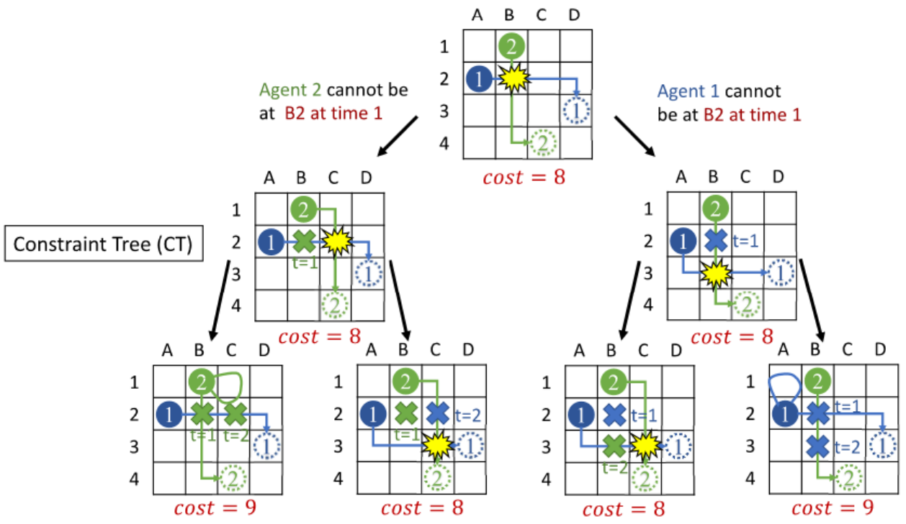

Here is our project for Carnegie Mellon University 15-618: Parallel Computer Architecture and Programming
Parallelized Conflict-based Search for Multi-Agent Pathfinding
We are going to parallelize the CBS algorithm used to solve Multi-Agent Pathfinding (MAPF) problems on a multi-core CPU platform.
CBS is a two-level algorithm. At the bottom level, it utilizes the A* algorithm to find paths for individual agents. At the top level, it creates a binary tree (known as the constraint tree) which is used to select which collisions to resolve amongst the agents. The root of this tree contains an instance of the problem where all agents naively plan a shortest path to their goal. If no collisions occur in this instance, then the problem is solved. Otherwise, the first collision between any two agents is selected and two subtrees are created. One subtree contains the same problem instance but prevents the first agent from being at the collision location at the collision timestep, and the second subtree is identical but prevents the second agent from being at the collision location at the collision timestep. The figure below gives a visualization of the Constraint Tree.

Credits: Jiaoyang Li. 16-891: Multi-robot Planning and Coordination
CBS has shown massive potential in finding optimal solutions to the MAPF problem. However, it is notorious for being slow and as such many sub-optimal algorithms are chosen as they perform much faster. Our goal is to improve the performance of the CBS algorithm by leveraging parallelization. The constraint tree creates clear separation between its nodes allowing for parallelization to take place at each subtree/node.
At first glance the problem may seem trivial to parallelize. Simply run each subtree in parallel. However, the coordination of determining which nodes should be run poses a challenge. The constraint tree is itself performing a search to find the constraints that result in the optimal configuration of paths for each agent. Thus, simply executing each node when it is created will quickly lead to inefficiency as we may expand down a subtree that has a cost higher than the optimal cost. As a result, any expansions down this subtree is wasted as none of the computation on this subtree is actually assisting with moving towards the solution. Similarly, ensuring that once a solution is found no more computation is performed also presents a challenge, as an individual node may take a while to be processed. Lastly, as we have seen in homework 3 and 4, parallelizing tree structures can occasionally lead to poor load balancing, hence avoiding such situations will be critical in our implementation. The CBS algorithm is similar to the A* algorithm in that it is memory-bound due to the large number of memory accesses need to be made for path planning, collision checking, and cost computation. Each subtree should in theory have good locality as there will be a lot of reuse, however structuring the implementation correctly will be critical in ensuring that we can exploit this locality.
Planned Goals:
Stretch Goals:
Performance:
| Date | Tasks |
|---|---|
| April 3-7 | - Implement single-threaded CBS |
| April 10-14 | - Naïve multi-threaded CBS |
| April 17-21 | - Analyze performance and identify bottlenecks - Project Milestone report |
| April 24-28 | - Improve performance of parallel CBS |
| May 1-5 | - Finalize improvements - Perform detailed analysis - Project Report due - Project Poster Presentation |